理大図書館職場体験（就実中学校編 平成20年度版）
平成20年10月28日(火)〜10月30日(木)(３日間)
昨年に引き続き、就実中学校から｢職場体験活動｣の依頼があり、平成20年10月28日(火)〜10月30日(木)の３日間に渡り、9:00〜16:00で2年生4名を対象とした図書館業務体験及び見学を実施しました。
体験の内容は、広汎に渡っており、１日目は、「１１号館・２１号館・１０号館図書館見学」、「ＯＰＡＣ実習」、「貸出・返却業務実習」、「図書館HP・情報検索」を、２日目は、「図書発注業務」、「図書受入業務」、「図書分類・目録」、「装備実習」を、３日目は、「書架整理実習」、「貸出・返却業務実習（２回目）」、「雑誌受入業務実習」、「ILL業務(依頼・受付)」を行いました。
各業務を体験できた時間は短かったかもしれませんが、図書館の殆どの業務を体験してもらえました。
◆見学◆
理大図書館は３館に分かれているため、11号館、10号館、21号館の順番で各図書館の見学を行いました。11号館図書館の３階ではどのように図書が並べられているかを説明し、その後、２階、１階の順で11号館の見学を行いました。特に1階の電動書架には感動したようでした。次に10号館図書館に移動し、馴染みのある図書を見て歩くことができました。最後に21号館図書館では、フロアの広さに驚いていたようでした。
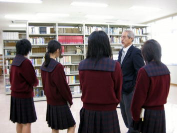
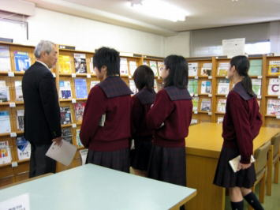
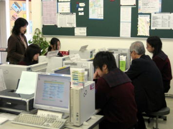
◆ＯＰＡＣ◆
コンピュータによる蔵書検索では、OPACとOLION画面について説明をした後、実際に例題に基づき、様々な入力の仕方で資料検索の演習を行いました。その後、検索した資料に書かれている請求記号と資料ID等を元に、実際に書架に行き、指定した図書を１冊ずつ探し出してくることと、更に、各自興味ある図書を１冊ずつ検索する実習を行いました。
皆さんパソコン操作には慣れているようでしたが、実際に書架から図書を選んでくるのも慣れているようでした。
最後に「岡山県図書館横断検索システム」を使い、理大にない図書の岡山県内の公共図書館や他大学の図書館の所蔵も実際に調べ、OPAC（蔵書検索）実習を終了しました。
◆貸出・返却(1回目)◆
理科大学で行っている貸出・返却の手続きを説明した後、貸出・返却の実習をしました。実際の業務では、多数の学生が貸出に来たことで、「利用カード」の受取から「本の貸出」まで手順よく行うことが出来ました。
また、貸出を行った学生から、「ありがとう！」とお礼を言われていました。
返却処理が終わった本は、館内の書架に戻す作業をします。実際に自分で返却処理した本を書架に戻していきました。請求番号順に並べていきましたが、真剣に取り組んでいた姿が印象的でした。
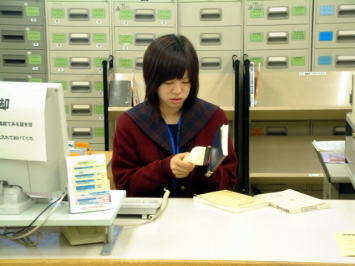
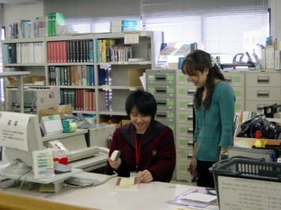
◆図書館HP・情報検索◆
図書館HPにリンクされているものの概要を聞いた後、雑誌記事の検索を国立国会図書館「雑誌記事索引」で、新聞記事の検索を「聞蔵」で行いました。「環境問題」や「就実」など色々なキーワードで試してみました。
理科年表を使ってみたり、Dnaviを紹介するとどのようなデータベースがあるか熱心に調べているようでした。
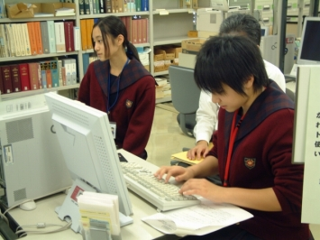
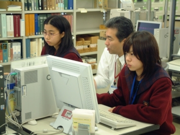
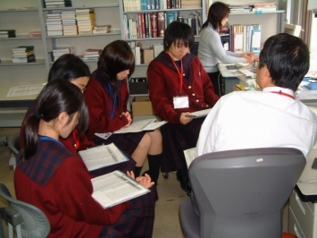
◆図書発注◆
図書の選定ならびに発注業務をパソコンを使い説明しました。科学分野における進歩は目覚ましく、リアルタイムなサービス提供の必要性が痛感されます。ＮＤＣやＩＳＢＮを駆使することで、正確かつ迅速なサービス提供ができることを理解していただけたのではと思います。
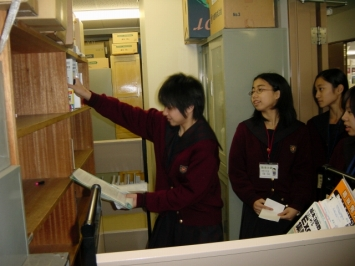
◆図書受入◆
図書受入業務の全般的な流れを説明した後、ＰＣで発注リストの作成→ブックトラックに発注リストの順番に並べるのを体験→ＰＣで受入登録→ＰＣでＩＤの採番→ＰＣで支払い書類の作成。ＰＣでの業務も少し体験してもらいました。
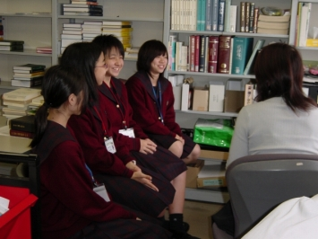
◆図書分類・目録◆
図書の分類のしくみについてパワーポイントと日本十進分類法を使って説明しました。
その後二人一組になって、実際に図書の分類をしてもらい、最後に受け入れた図書の目録データを確認するとともに、分類の入力をして所蔵をつけてもらいました。
生徒の皆さんは、初めて体験する仕事に興味をもち、実習をこなしていく姿が中学生らしくてとてもさわやかでした。
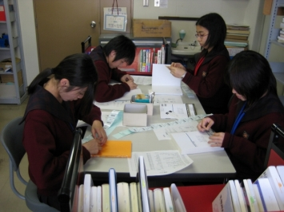
◆装 備◆
４人全員にそれぞれ装備をしてもらいました。
一人ひとりバーコードラベルと蔵書ラベルを印刷し、バーコードラベル・蔵書ラベル・ブックポケット・貸出期限票を貼ってもらい、小口印を押してもらいました。最後に背ラベルを貼り、時間の都合で１冊だけでしたが、実際に棚に並べてもらいました。
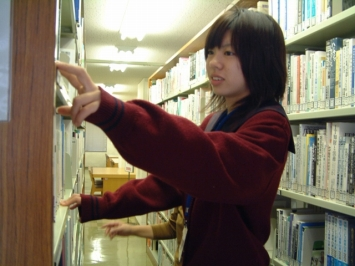
◆書架整理◆
図書館では定期的な書架整理が必要不可欠な重要な業務です。並び順は、背の３段ラベルにより１段目の分類番号と２段目の著者記号の並び順に図書がきちんと配置できていなかったら、実際にOPACで資料を検索し、該当の棚に図書を探しに行っても図書が見当たらないといったことになるため、書架整理をすることは大切であることの説明を受け、実際に一人１連ずつ担当して書架整理をしてもらいました。
書架整理も皆さんすぐに慣れていったようです。
◆貸出・返却(２回目)◆
職場体験３日目、２回目の貸出・返却の実習を行いました。
前回の実習成果が発揮され、堅い雰囲気にも気圧されず淡々とカウンター業務をすることができました。
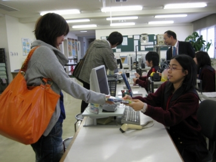
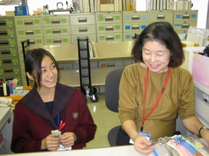
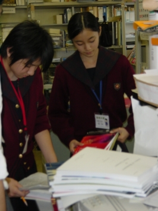
◆雑誌受入◆
雑誌についての全般的な説明と受入業務の詳細を聞いてもらった後、当日届いたばかりの宅配便の箱を開けて、納品チェックをした後、資料IDシール・利用度調査票シールの装備を実際にやりながら、図書館システムへ受入データの登録を洋雑誌・和雑誌を合わせて一人８冊位してもらいました。緊張していましたが、皆さんスムーズに登録できていましたよ。
宅配便の箱を開けた際、「Physical Review」を見て、「え〜っ こんなに大きな本が雑誌なの？」って驚いていた方も居ました。
'Applied physics letters' Vol.93No.12 や「考古學雜誌」92巻2号は当日、実際に登録してもらったものです。
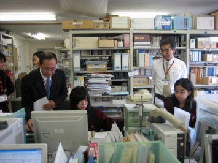
|
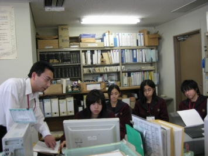
◆ILL依頼◆
ＩＬＬ（相互貸借）とは、自館に無い資料や文献を外部の図書館から取り寄せたり（依頼）、 逆に外部の図書館から借用や複写の申込みを受け付ける（受付）仕事です。依頼業務では、
実際に先生や学生から申込みのあった文献の取り寄せ依頼を一人ずつ業務体験してもらいました。
◆ILL受付◆
他大学等からの依頼を受信し、文献や図書を発送するまでの作業を行いました。 該当の文献を探す際、普段見なれている雑誌とは違う製本雑誌に戸惑ってはいましたが、無事文献を探し出すことが出来ました。
紙による複写だけでなく、電子送信や現物貸借での図書の発送も行いました。
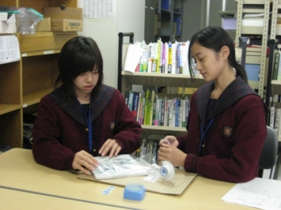
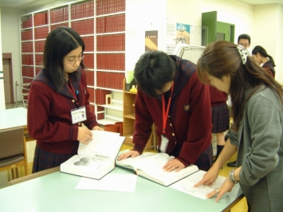
◆｢職場体験活動の記録｣まとめ◆
館長室で「職場体験活動の記録」のまとめや図書館からのアンケートに記入してもらいました。その他、印象に残ったことなどを別紙に記入するようお願いしたところ、イラスト入りで色々な感想を書いてもらえました。その感想は最後に紹介しています。
◆「図書館クイズ2008・2008読書週間アンケート｣掲示板の前で◆
読書週間に併せて、10月27日〜11月10日まで開催中の「図書館クイズ2008・2008読書週間アンケート｣や「図書館の使い方（ビギナー編）」等のパネルの前で、最後に記念撮影をしました。
中学生の方にも図書館クイズにチャレンジしてもらいましたよ。（難しかったかな？？）
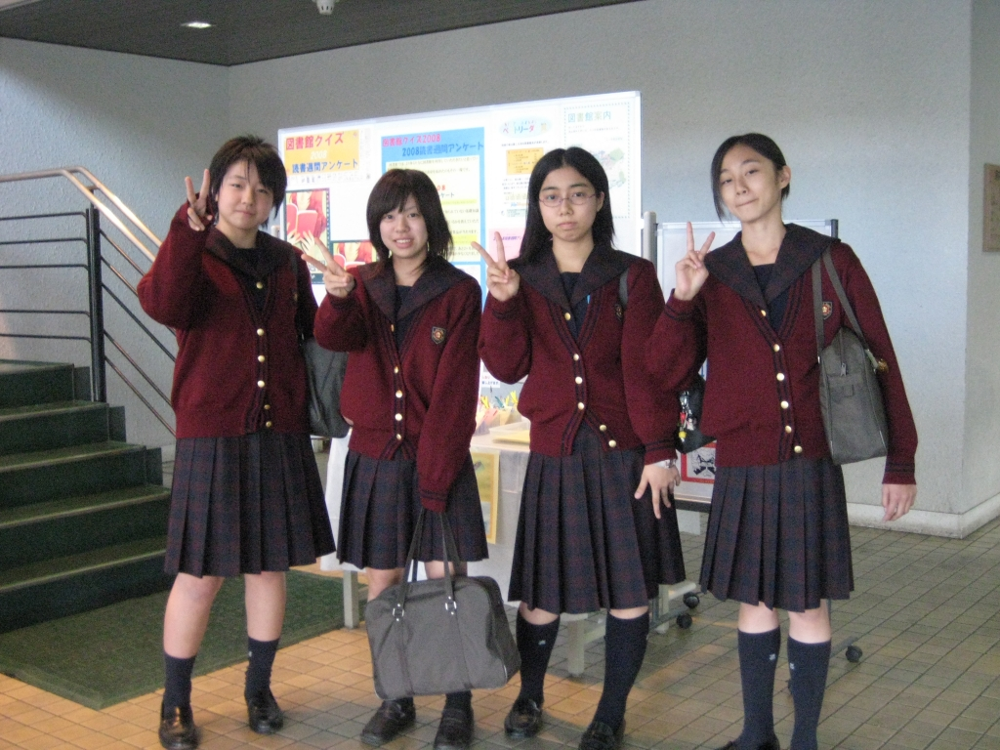
さて、以上で職場体験は終わりです。皆さん、いかがでしたか？今度は、「仕事」をしにではなく、リラックスして図書館を使いに来て下さいね。
「図書館おもしろかったです。理大の図書館はせいのうがよくて、びっくりしました。１番おもしろかった（楽しかった）のは、貸出・返却です。バーコードリーダーでピッピッ♪するのがよかったです(^_^)。みなさん優しくてたよりがいがありました。」
「貸出・返却でいろんな人と話せて、楽しかったです！！マタ本ヲカリニキマス！
３日間ありがとうございました。」
「３日間、ありがとうございました！！理大の図書館は、いいところでした。先生方も、すきになりました。
きっとまた、きますね！！その時は、「こんにちは」で会いましょうねぇ(^^)/」
「３日間ありがとうございました。３日間、この理大の図書館で働いてみて、大変そうな部分もあったケド、分かりやすく説明していただいたので、とても楽しくすごせました。この体験を忘れないで、今後生活していこうと思います。また、遊びに来ます。これからも、がんばってください。」
|